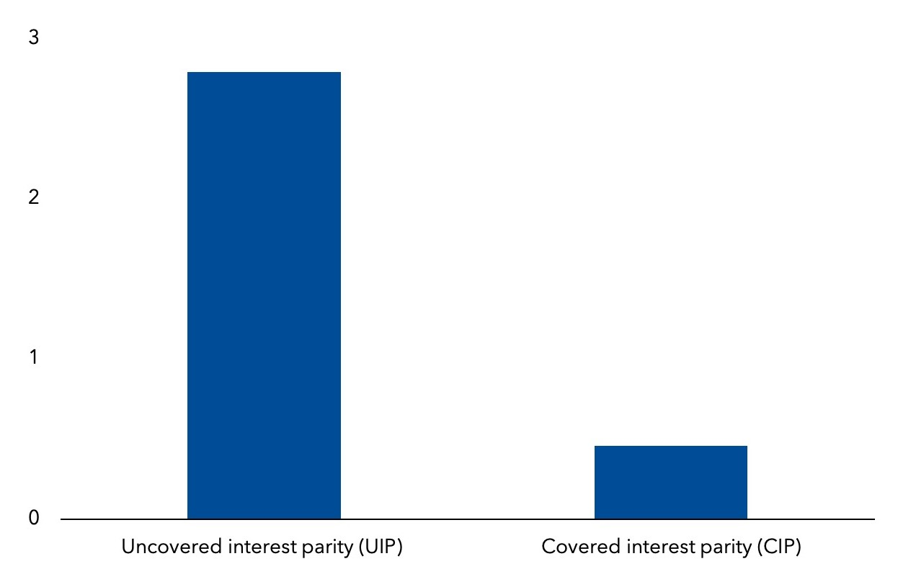
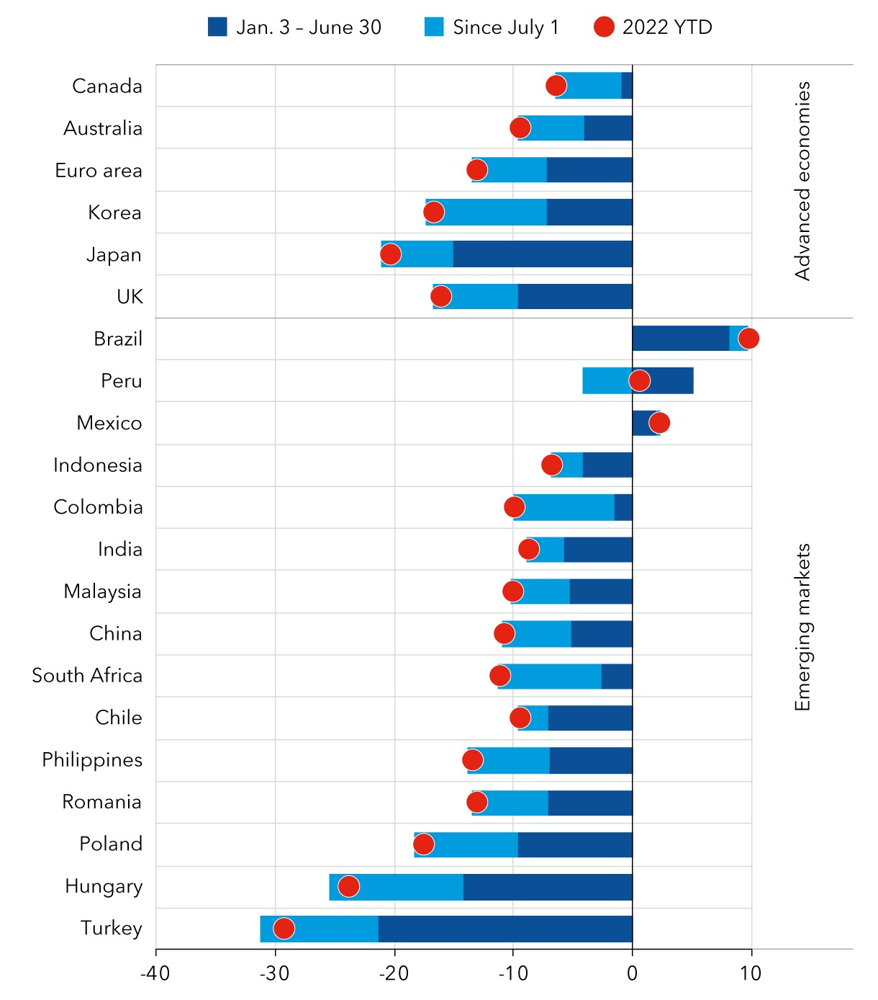

Policy responses to currency depreciation pressures should focus on the drivers of the exchange-rate moves and signs of market disruptions
The dollar is at its highest level since 2000, having appreciated 22 percent against the yen, 13 percent against the Euro and 6 percent against emerging market currencies since the start of this year. Such a sharp strengthening of the dollar in a matter of months has sizable macroeconomic implications for almost all countries, given the dominance of the dollar in international trade and finance.
While the US share in world merchandise exports has declined from 12 percent to 8 percent since year 2000!
The dollar share in world exports has held around 40 percent. For many countries fighting to bring down inflation, the weakening of their currencies relative to the dollar has made the fight harder. On average, the estimated pass-through of a 10 percent dollar appreciation into inflation is 1 percent. Such pressures are especially acute in emerging markets, reflecting their higher import dependency and greater share of dollar-invoiced imports compared with advanced economies.
 November 26, 2023
Pierre-Olivier Gourinchas
The dollar’s appreciation also is reverberating through balance sheets around the world. Approximately of all cross-border loans and international debt securities are denominated in US dollars. While emerging market governments have made progress in issuing debt in their own currency, their private corporate sectors have high levels of dollar-denominated debt. As world interest rates rise, financial conditions have tightened considerably for many countries. A stronger dollar only compounds these pressures, especially for some emerging market and many low-income countries that are already at a high risk of debt distress.
In these circumstances, should countries actively support their currencies? Several countries are resorting to foreign exchange interventions. Total foreign reserves held by emerging market and developing economies fell by more than 6 percent in the first seven months of this year.